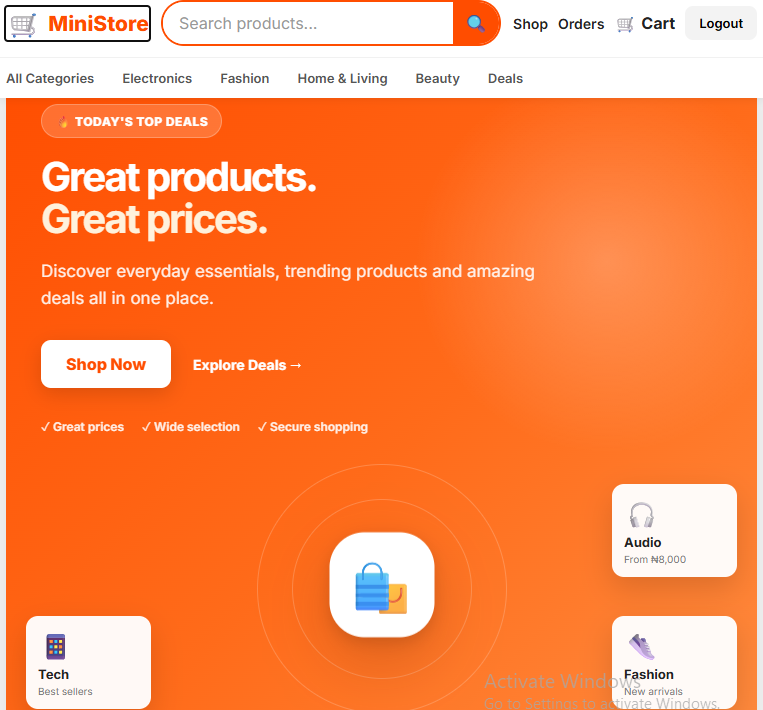
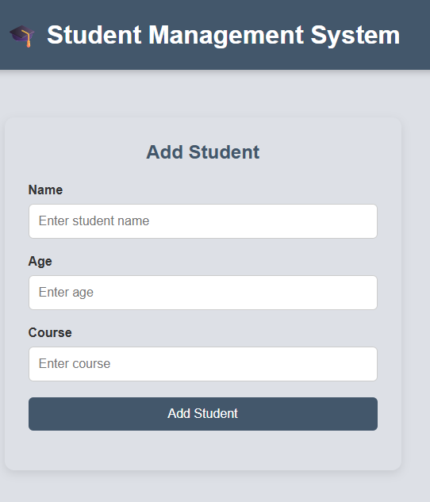

01
Backend development
Building API-driven applications, organizing business logic, validating inputs, and connecting services and data.
Node.jsExpressREST APIs
BACKEND ENGINEERING + FRONTEND DEVELOPMENT
I'm Dolores Onwugbufor, a TS Academy Software Development graduate and Medical Laboratory Scientist. I enjoy turning real-world problems into practical applications with thoughtful user experiences and dependable backend logic.

A LITTLE ABOUT ME
My path into software development combines analytical thinking from medical laboratory science with hands-on technical learning. After completing software development training at TS Academy, I built applications that helped me practise API design, application logic, data handling, and responsive interfaces.
I’m especially interested in junior backend and frontend opportunities where I can contribute, learn from experienced teammates, write maintainable code, and keep growing through real product work.
Building API-driven applications, organizing business logic, validating inputs, and connecting services and data.
Creating responsive, user-friendly interfaces and connecting UI flows to backend services.
TOOLS I WORK WITH
These are the technologies and tools I've used during training and project work. I'm continuing to deepen my knowledge through building and testing.
SELECTED PROJECTS

A team-built e-commerce application structured around separate services for authentication, catalog, and orders, connected through an API gateway and a React frontend.
Explore project ↗A banking workflow project covering registration, JWT login, identity onboarding, account creation, transfers, and transaction history.
Find on GitHub ↗
A student records application built to practise CRUD workflows, frontend-to-backend communication, and API routing.
Find on GitHub ↗A supermarket inventory management app focused on product and stock workflows for a retail setting.
Find on GitHub ↗MY JOURNEY
My background has shaped the way I approach technology: carefully, systematically, and with people in mind.
Completed software development training at TS Academy and built practical projects, including a team microservices e-commerce capstone.
Earned AWS Solutions Architect certification, strengthening my understanding of cloud architecture and foundational cloud services.
Built a foundation in accuracy, documentation, process discipline, teamwork, and careful problem-solving in a clinical environment.
Developed customer communication, troubleshooting, and support skills that complement my technical work.
LET'S CONNECT
I'm interested in junior backend and frontend developer opportunities, internships, and collaborative projects.
Contact me ↗